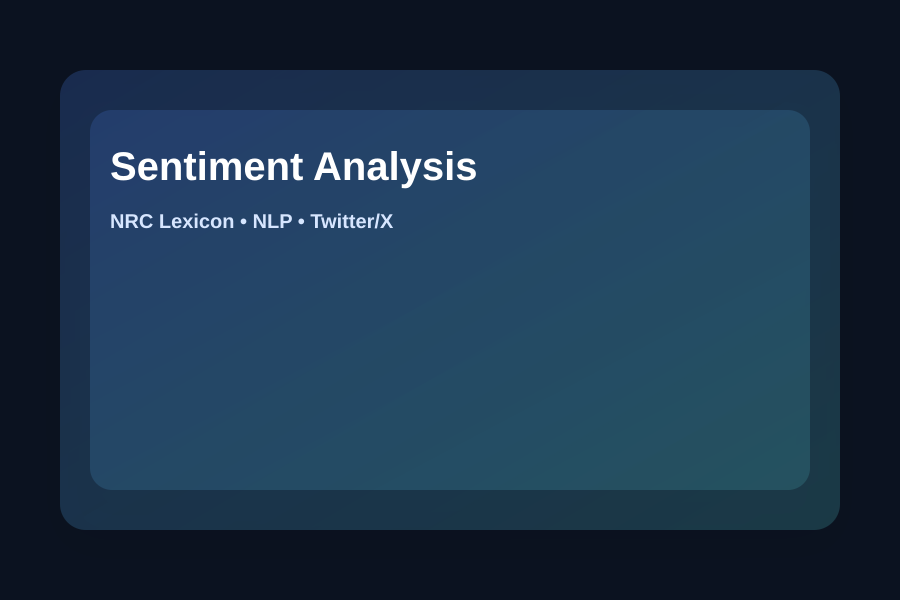

Sentiment Analysis of Pilkada DKI Jakarta 2024
Personal Project • NLP • Public Opinion
Analyzed public sentiment around the 2024 Pilkada DKI Jakarta discussion on Twitter/X using preprocessing and NRC Lexicon-based classification.

Dataset: ~1,000 tweets collected early 2024 to May 2024.
Methodology
- URL & hashtag removal
- Stopword removal
- Stemming & tokenization
- Slang normalization
- Duplicate handling
- NRC Lexicon sentiment classification
Output
Classified tweets into positive, negative, and neutral sentiment and produced proportion reports.
Python
Tweet Harvest
NLP preprocessing
NRC Lexicon